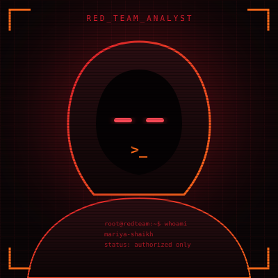

Offensive Security & Red Team Operator holding a master's in Cybersecurity from University of Mumbai (8.9 CGPI) and top 1% global ranking on TryHackMe. Published author of 3 peer-reviewed research papers in machine-learning smishing detection, specializing in adversarial exploitation, external threat intelligence, and hardened defense.
Dissecting complex software attack vectors, engineering automated OSINT reconnaissance platforms, and training deep neural architectures to detect malicious telecommunication fraud.

I hold an advanced master's degree in Cybersecurity from the University of Mumbai (8.9 CGPI), an undergraduate degree in Computer Science (9.17 CGPA), and official ISC2 Candidate standing. On TryHackMe, I rank within the Top 1% globally, solving live adversarial labs spanning perimeter penetration, network privilege escalation, and web application exploitation.
Across professional internships at Cyber Secured India, Elevate Labs, and Chaitanya Cyber Strix Technologies, I have executed full-lifecycle security assessments: stealth TCP SYN reconnaissance with Nmap, packet dissection in Wireshark, email header threat deconstruction, firewall policy implementation, and real-time Level 1 SOC incident triage using Splunk and Wazuh SIEM. In my digital forensics internship, I achieved an 88.89% score in practical examinations.
Beyond offensive tradecraft, I am a published researcher with 3 peer-reviewed journal papers (IJITEE, IJSR, and IJRTE), investigating machine learning and deep learning models (Bi-LSTM, Random Forest, CNN, TF-IDF, SMOTE) for automated smishing (SMS phishing) detection.
Tactical offensive tools, threat intelligence scanners, AI anomaly classifiers, and defensive telemetry stacks calibrated for red team operations.
External Surface Mapping & Enumeration
Penetration Testing & Attack Vectors
OWASP Top 10 & Application Auditing
Live interactive cybersecurity simulators, reconnaissance suites, AI detection pipelines, and offensive penetration testing labs.
Hands-On Cybersecurity Sandbox with Bilingual Explanations
An interactive web-based cybersecurity simulator designed to eliminate the steep learning curve of web vulnerabilities through sandboxed, gamified execution.
Google Dorking Engine & Threat Intelligence Dashboard
A high-speed reconnaissance platform built for penetration testers and OSINT investigators to systematically discover attack surfaces and exposed assets.
Ensemble AI Classifier with 99% Test Accuracy
A production-ready machine learning application combating SMS phishing attacks that bypass standard cellular telecom spam filters.
Field experience across threat reconnaissance, network penetration testing, SOC alert monitoring, and digital forensic investigations.
Published peer-reviewed research papers investigating machine learning and deep learning methodologies to combat mobile SMS phishing (smishing).
Investigates the proliferation of mobile smishing vectors and evaluates the efficacy of multiple ML and deep learning architectures (CNN, LSTM, IndRNN, Capsule Networks, and Random Forest) combined with TF-IDF vectorization to deliver automated real-time SMS filtering.
Presents an empirical comparative benchmark of 5 models (Logistic Regression, Random Forest, SVM, CNN, LSTM) on the UCI SMS dataset. Demonstrates that LSTM achieved peak detection accuracy at 98.2%, while Random Forest provided optimal operational balance for high-throughput deployment.
An in-depth investigation into sequential recurrent neural networks and word embedding representations for malicious text anomaly recognition. Formally reviewed and accepted under merit basis, contributing to mobile Cyber Threat Intelligence.
Rigorous postgraduate specialization in offensive cybersecurity complemented by strong fundamental computer science training.
Advanced postgraduate specialization focusing on offensive cyber warfare, vulnerability research, cryptographic systems, network security architectures, and machine learning integration for threat detection.
Graduated with Distinction (9.17 CGPA), developing a robust computational foundation in computer networking protocols, Linux operating system internals, algorithm design, and software engineering.
Official industry certificates, CTF achievements, and academic credentials. Click 'View Credential' on any card to inspect the verified proof document.
Official membership badge demonstrating global alignment with ISC2 security standards, GRC domains, and active certification preparation.
19-hour hands-on curriculum covering network routing, web application fundamentals, Linux architecture, and core offensive techniques.
Competitive CTF event solving real-world exploit challenges and demonstrating offensive security problem-solving.
Passed the Cisco Career Path examination, verifying core skills across vulnerability identification, security controls, and endpoint auditing.
Foundations training covering SOC operational workflows, telemetry collection, cloud security monitoring, and alert response.
Achieved an 88.89% score in rigorous practical examinations evaluating disk imaging, evidence analysis, and investigative reporting.
Award for outstanding investigative performance and leadership across 4 weeks of intensive digital intelligence tradecraft.
Practical forensics credential verifying Linux filesystem investigations, mock disk image analysis, zip cracking, and steganography.
Validates foundational knowledge of ethical hacking, engagement scopes, and structured offensive assessment procedures.
Course completion on in-band, error-based, and blind SQL injection exploitation techniques and parameterized query defense.
Covers enterprise threat landscapes, risk management, perimeter defenses, and actionable cyber governance strategies.
Fundamental security principles, threat actor taxonomy, confidentiality, integrity, availability, and modern defensive controls.
Participation in symposium on advanced offensive threats, young professional cybersecurity leadership, and global industry trends.
Official certificate of peer-reviewed journal publication for deep learning research in SMS smishing message detection.
Official certificate of publication for comparative analysis of machine learning models in smishing detection.
Interested in collaboration, VAPT assessments, red team engagements, or threat intelligence consulting? Transmit a message below.
Feel free to connect directly via email, phone, or professional networks. I respond promptly to inquiries regarding offensive security, SOC, and research collaborations.